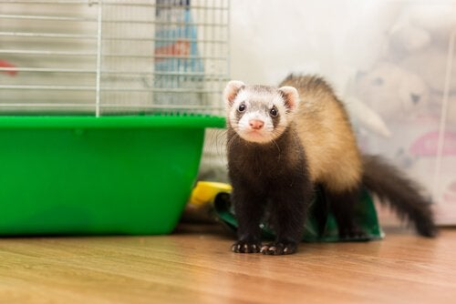
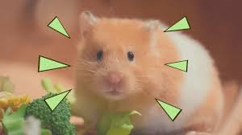
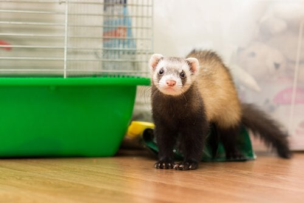
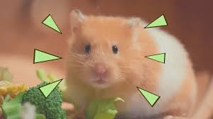

Cuidados com Animais
Aceitamos todos os tipos de pets que você pode imaginar, desde Cachoroas, Gatos, Coelhos, Furões, Roedores,etc.
Tornar a vida dos pets mais feliz e saudável não é só a missão da Dog Choni , mas também de todas as pessoas que compartilham o mesmo teto com um cachorro.
Por mais que alguns pareçam antissociais e aborrecidos, os gatos amam brincadeiras, e isso é tão importante quanto alimentá-los de forma saudável. Diferentemente dos cachorros, o ato de brincar trata-se de menos exercícios e mais de atender os instintos predatórios naturais, assim, garantindo a satisfação e bem-estar dele..